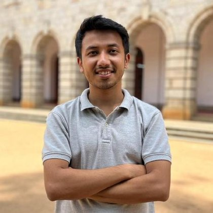

I did my M.Tech (Research) at the Indian Institute of Science (IISc) in Bangalore, from 2023 to 2026. I was advised by Prof. Rajiv Soundararajan in the Visual Information Processing Lab. I work on 3D reconstruction of scenes that move. I build 3D models from videos taken by several cameras, so the scene can be seen from new viewpoints. I focus on keeping the moving parts sharp, even in long videos.
I grew up in Dibrugarh, Assam, a small town in the northeastern part of India known for its tea. Before IISc, I did my Bachelor of Engineering (B.E.) in Computer Science and Engineering at Jorhat Engineering College. At IISc, I also served as Secretary of the IISc ACM Student Chapter.
I love movies, and filmmaking is a big part of why I like 3D vision. Many films today are made by capturing real places and people in 3D and rendering them again. One thing I like to share is The Campanile Movie. Paul Debevec made this short film in 1997 from just a few photos of a clock tower, long before NeRFs and Gaussian splats.
Outside of work, I enjoy travelling, motorbiking and cooking (I am a fairly good cook).
I am currently looking for PhD and research positions in 3D vision and graphics. I am always happy to talk about 3D vision, films, or anything else, so feel free to reach out on LinkedIn or by email.
Projects and Publications
- Sustaining Reconstruction Quality in Long-Duration Dynamic 3D Gaussian Splatting Mayurdeep Pathak, Vikram Sandu, Rajiv Soundararajan Under review Project page
- Temporally Aware Densification for Dynamic 3D Gaussian Splatting Vikram Sandu, Mayurdeep Pathak, Rajiv Soundararajan European Conference on Computer Vision (ECCV), 2026 Project pagearXiv
- GlobeMetrics: A Healthcare Framework for Video Based Saccade Characterization Debanga Raj Neog, Pharvesh Salman Choudhary, Mayurdeep Pathak IEEE Conference on Artificial Intelligence (CAI), 2024 Paper